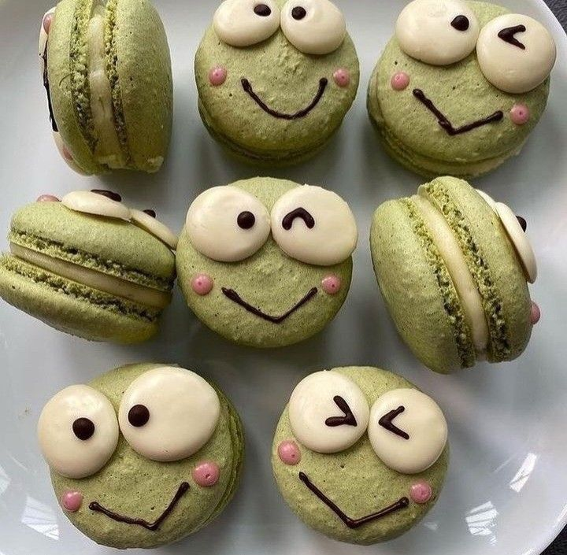

Macarons
Description
Macarons are a nice, elegant dessert to have at an event or simply just after dinner.
Ingredients (Shells)
- 100g of Almond Flour
- 100g of Sugar
- Egg Whites
- Granulated Sugar
- Unsalted Butter
- Vanilla Extract
Steps
- Weight out almond flour and powered sugar.
- Whisk together almond flour and powdered sugar.
- Weight out sugar over egg whites in your mixer bowl.
- Whisk egg whites and sugar over a double boiler until sugar is fully dissolved.
- Beat egg whites and sugar for about three - four minutes until stiff peaks form.
- Sift dry ingredients (#1) over meringue
- Mix macaron batter by scraping the edge of the bowl with a rubber spatula and the folding it down the center.
- Mix just until the batter is runny enough to form a full figure 8 (please don't over mix.)
- Place macaron batter in a piping bag fit with a medium sized circle tip.
- Pipe even sized macarons on prepared baking sheet.
- Bang the pan on the counter a couple of times to release air bubbles.
- Rest just until the oven is done preheating and bake one pan at a time, on middle rack.
Ingredients (Buttercream)
- Unsalted Butter
- Heavy Cream
- Vanilla Bean Paste
- Fine Sea Salt
- Confectioner's Sugar
Steps
- Beat the butter for 2-3 minutes until it's light and fluffy. Make sure to scrape down the side of the mixure bowl as needed so all of the butter is evenly creamed.
- Slowly add the Confectioner's Sugar to the butter, 1/2 cups at a time. Allow the sugar to incorporate with the butter. Leaving the mixer on medium-low speed so the confectioner's sugar doesn't explode everywhere is reccomened.
- Next, thin out the buttercream with some heavy cream, as well as add in flavoring with vanilla bean paste and fine sea salt.
- Beat the buttercream on medium-high speed for a full 5 minutes. This will give the buttercream a light and fluffy texture.
- In order to smoothly pipe the buttercream, it's important to deflate it using a silicone spatula. Press the buttercream around the side of the mixer bowl until most of the air bubbles have been pushed out.
- Finally, pipe the buttercream on one side of the macaron shell using your favorite piping tip!
Donuts